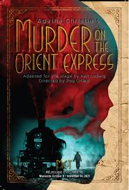
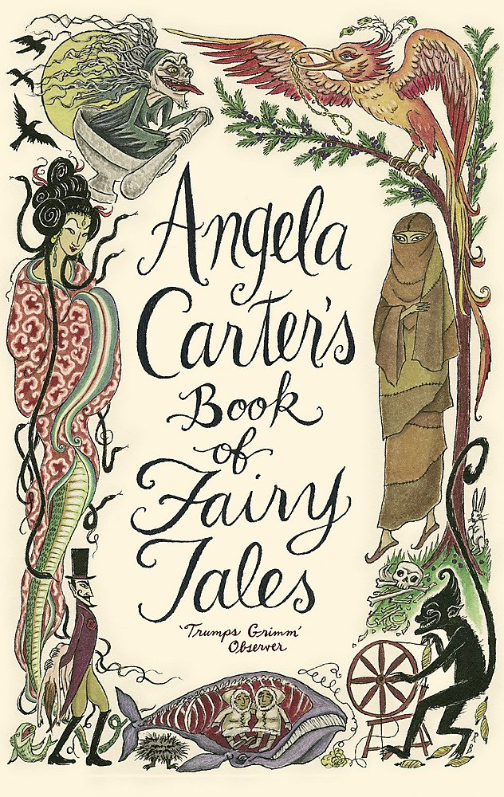

Books

Some Interesting Facts
- The Bible is sold all over the world, which makes it the most sold book there is! At an estimate, there are 5 billion printed copies of it around the world.
- According to Guinness World Records, ‘Remembrance of Things Past’ is the longest book in the world. It has 9,609,000 characters, including spaces.
- If you read for 20 minutes every day for a year, then you would have read 1.8 million words.
The famous character Alice from 'Alice in Wonderland' is based on a real 10-year-old girl named Alice Liddell. Her family was close friends with the writer Lewis Carroll
"A book is a garden, an orchard, a storehouse, a party, a company by the way, a counselor, a multitude of counselors." – Charles Baudelaire
There are dozens of different book genres, from adventure fiction to self-help books.
1. Adventure stories
Adventure novels whisk readers off to faraway lands. Unlike fantasy novels, they tend to stay in the real world (although there’s often a lot of crossover between these genres). Children’s novels often fall into the adventure category, since they’re designed to spark imaginations.
Some famous adeventure stories are:The Three Musketeers by Alexandre Dumas,Journey to the Center of the Earth by Jules Verne,etc.

2. Crime
From murder mysteries to true crime stories, crime is an enduringly popular genre. It tells terrifying stories of wrongdoing, and the search for justice. This genre can be very lucrative, with many authors becoming household names, such as Agatha Christie(Murder on the Orient Express), Val McDermid(The skeleton Road), and Harlan Coben.

3. Fairy tales, fables, and folk tales
Folk tales date back to ancient times, with Aesop being perhaps the most famous curator of these short-form stories. Many fairy tales are actually of unknown origin, but have survived through retellings down the generations. Modern fairy tale writers like Angela Carter often put a contemporary spin on traditional tales

4. Fantasy
Fantasy books are probably the most popular modern book genre. Thanks to series like Harry Potter and Percy Jackson, it’s particularly popular with young adult readers, although more and more fantasy novels are written for adults (George RR Martin, we’re looking at you). These stories take readers on a journey beyond the known world, to places conjured in the author’s imagination.

If you would tell me the heart of a man, tell me not what he reads, but what he rereads.
~Francois Mauriac